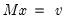

@solvesystem Solve system of linear equations. Syntax: @solvesystem(o, v) m: matrix, sym v: vector Return: vector Returns the vector x that solves the linear system  where the matrix or sym is given by the argument m, and the vector is given by the argument v. Examples We first create a workfile, generate a random series, and create a group for estimating a trend regression. workfile u 100 series y = nrnd group g 1 @trend We extract the moment matrices, matrix xx = @inner(g) vector xy = @transpose(@convert(g)) * @convert(y) and solve the moment conditions to obtain regression coefficient estimates vector b1 = @solvesystem(xx, xy) We may compare these results to those obtained by estimation using series and the equation object: equation eq1.ls y g vector b2 = eq1.@coefs and see that B1 and B2 are identical. Cross-references See also @regress, @intercept, and @trendcoef.


is given by the argument m, and the vector is given by the argument v.